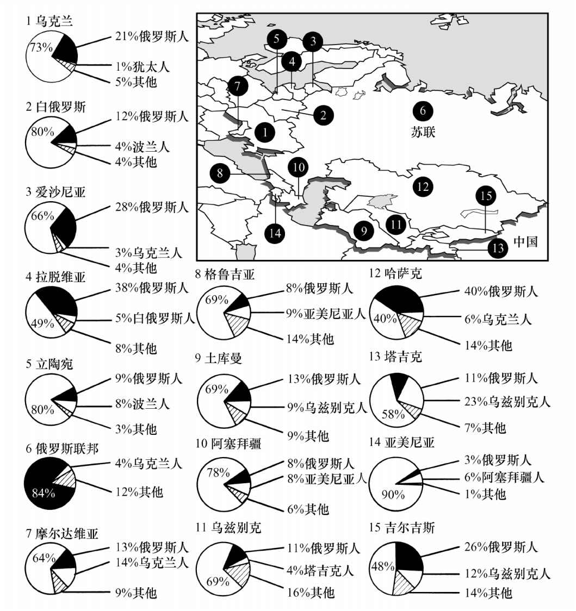

我们前面已提到，16世纪中叶，伊凡雷帝征服了喀山和阿斯特拉罕，但还留下两个独立的汗国——南面的克里米亚鞑靼人的汗国和乌拉尔山脉另一边的鞑靼人的汗国。后者在短短几年中为叶尔马克及其后继者所征服。但是，克里米亚的鞑靼人一直坚持到18世纪末。他们得以幸存的一个原因是，他们享有奥斯曼帝国的强力支持。但是，奥斯曼土耳其人被叶卡捷琳娜女皇打败，并被迫于1792年接受了《雅西条约》。这一条约使俄国获得了东起库班河西至第聂伯河的整个黑海北岸。

图166 苏联加盟共和国的民族构成（每组百分数相加不一定等于100%）。由15个加盟共和国构成的苏联的这幅图显示，各民族在不同的加盟共和国内，基本上都保持了数量上的优势。因此，它们能在苏联为独联体所取代时要求并赢得独立（《洛杉矶时报》1990年1月28日。授权使用）。
整个乌克兰这时都已处在俄国的统治之下，森林终于战胜了大草原。中亚的沙漠区仍在坚持不屈，但它也注定要在下一世纪中受到莫斯科的统治。这样，在经过几个世纪的扩张之后，一个东欧的小公国变成了世界上最大的国家，它拥有除原斯拉夫人以外的数十个少数民族。1917年以前，这个国家称为沙皇帝国。1917年布尔什维克革命以后，它成为苏维埃社会主义共和国联盟（苏联），并一直持续到1991年；这一年，苏联解体，为独联体所取代（见第四十四章第三节）。
尽管这数十个少数民族先被沙皇、然后被苏联统治了几个世纪，但他们仍保留了自己的独特性。因此，他们才能在1991年苏联解体时建立起独立的国家。相比之下，组成美国的少数民族几乎和俄罗斯一样多，但他们却并没有要求独立。为什么在这两个国家会有这种根本不同的情况呢？
一种解释是，苏联是一个“民族的马赛克”，而美国则是一个“民族的熔炉”。之所以说苏联是一个马赛克，是因为如前所述，几个世纪以前，俄罗斯人开始征服他们的邻居，一直远征到太平洋，然后把他们组合成一个帝国，就像将很多不同颜色的玻璃片拼在一起，组成一个马赛克一样。正如马赛克里的每一块玻璃片都保留了自己的颜色一样，沙俄——苏联马赛克里的各民族也都保留了他们的独特性。1991年，马赛克破碎，它们成为独立的国家。
正如俄罗斯人征服欧亚大陆诸民族一直远征到太平洋一样，美国人也在西进到太平洋的过程中，征服了很多印第安部落。但是，大西洋和太平洋之间的印第安人的数量，比起乌拉尔山和太平洋之间的欧亚人的数量要少得多。因此，美国人便能将所有印第安人赶到为数不多的几个居留地中。这为全世界数以百万计的人移民到相对空旷的美国扫清了道路。在那些土地上，移民们“混居”在一起，以致今天很多不同民族的后裔常常生活在美国城市的一个街区或一个公寓里，成为邻居，而不是像苏联的15个苏维埃社会主义共和国那样，某个民族的大部分组成整个一个共和国。这就是为什么熔炉中的许多元素（墨西哥人、朝鲜人、华人、日耳曼人、美国黑人等）没有要求从美国独立或自治，而苏联中的亚美尼亚人、乌克兰人和各穆斯林种族集团却都要求独立的原因。第527页中的图“苏联加盟共和国的民族构成”所提供的统计数字表明，为什么苏联作为马赛克解体了，而美国则以熔炉的形式存续下来。
[推荐读物]
最全面地概述俄国向西伯利亚扩张的著作有：F. A. Golder所著的Russian Expansion on the Pacific，1641-1850（Clark出版社，1914）；R. J. Kerner所著的The Urge to the Sea：The Course of Russian History（University of Califonia出版社，1942）；G. A. Lensen编辑的阅读材料集Russian’s Eastward Expansion in the North（Cambridge University出版社，1965）和L. H. Neatby所著的Discovery in Russian and Siberian Waters（Ohio Universtiy出版社，1973）。
描述西伯利亚历史特定阶段的著作有：D. W. Treadgold所著的The Great Siberian Migration（Princeton University出版社，1957）；R. H. Fisher所著的The Russsian Fur Trade，1550-1700（University of California出版社，1943）；G. V. Lantzeff所著的Siberia in the Seventeenth Century（University of California出版社，1943），V. Chen所著的Sino-Russian Relations in the Seventeenth Century（Nijhoff出版社，1966）；A. S. Donnelly所著的The Conquest of Bashkiria，1552-1740（Yale University出版社，1968）和J. R. Gibson所著的Feeding the Russian Fur Trade：Provisionment of the Okhotsk Seaboard and the Kamchatka Peninsula（University of Wisconsin出版社，1969）。
[注释]
[1]R. J. Kerner, The Urge to the Sea（University of California，1942）, p. 86.